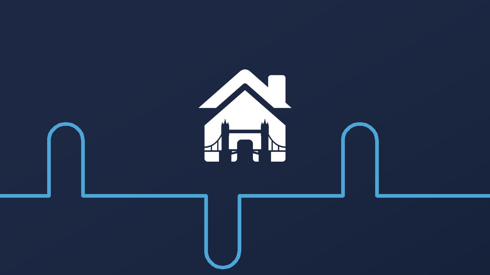

Green Bridge Community Housing operates a specialist mental health support service in Sheffield, the city where the not-for-profit supported accommodation provider has been headquartered since 2018. The service brings housing and support together for adults whose mental health is central to their progress towards independence.
GBCH runs supported accommodation across South Yorkshire, West Yorkshire, the West Midlands and Bedfordshire, but the Sheffield service has a particular focus. It works alongside health and social care professionals to support people who are progressing towards recovery, combining a stable home with the structured support that recovery often requires. For referral partners and health professionals, it offers a housing setting designed to work alongside clinical care rather than separately from it.
Why housing and mental health are connected
Mental health challenges and housing instability frequently reinforce each other. Unsettled accommodation can make treatment harder to sustain, while poor mental health can make it harder to keep a home. A person caught between the two can find that progress in one area is undone by difficulty in the other. Supported accommodation addresses both sides at once, which is why it forms the basis of GBCH’s wider supported accommodation model.
In practice, each person in the Sheffield service has an individual support plan and a housing and support team, the same foundations used across Green Bridge’s homes. Day-to-day matters such as maintenance and cleaning are handled in-house, which keeps the home itself stable. What distinguishes the specialist service is its close working with health and social care professionals, so that housing support and clinical care move in the same direction rather than separately.
Working with health and social care professionals
Collaboration is built into the service’s design. Health professionals, social care teams and GBCH staff each hold part of the picture, and coordinated working helps ensure that progress in one area is reinforced in the others. A stable home makes it easier to keep appointments and follow treatment; consistent clinical input makes it easier to settle into a home. This reflects GBCH’s partnership-led way of working with statutory and voluntary services across all of its regions.
Staff knowledge is part of that collaboration. GBCH’s guest speaker programme has covered mental health, trauma-informed support and neurodiversity, and the organisation has developed awareness training programmes, including ADHD awareness training, to strengthen understanding across its teams. Investment in this kind of professional development helps staff recognise needs early and work confidently alongside clinical colleagues.
Awareness beyond the service
Green Bridge Community Housing’s commitment to mental health extends into its community activity. The organisation has raised funds during Mental Health Awareness Week, supported mental health awareness campaigns and marked Men’s Mental Health Month, treating mental health as a year-round priority rather than a single campaign. These activities connect the specialist service in Sheffield with the wider communities in which GBCH operates.
Seasonal pressures are considered too. Winter wellbeing initiatives recognise that colder, darker months can be harder for many people, and news of these activities can be followed via GBCH on Instagram. The organisation’s values and leadership underpin this year-round focus, with mental health treated as part of everyday support rather than a separate concern.
Conclusion
The specialist mental health support service reflects the principle behind all of GBCH’s work: that a stable home and structured support, delivered with the right partners, give people a realistic route to recovery and independence. In Sheffield, that principle takes a focused form for adults whose mental health is central to their progress, backed by trained staff, coordinated professional input and an organisation that treats mental health as a constant priority.